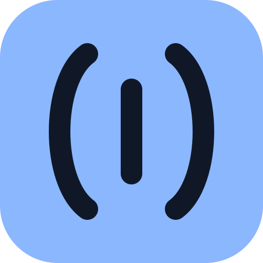

Search the Apple Podcasts catalogue. Add a show to keep it in your library.
YOUR COLLECTION
My podcasts
Search for a podcast above to get started.
NOW PLAYING
Choose an episode
Your selected episode will appear here

0:000:00
Volume levellingReduce loud peaks and make speech more even
BalancedThis adjusts dynamic range; it cannot identify adverts specifically. Results depend on the recording and your device.
85%